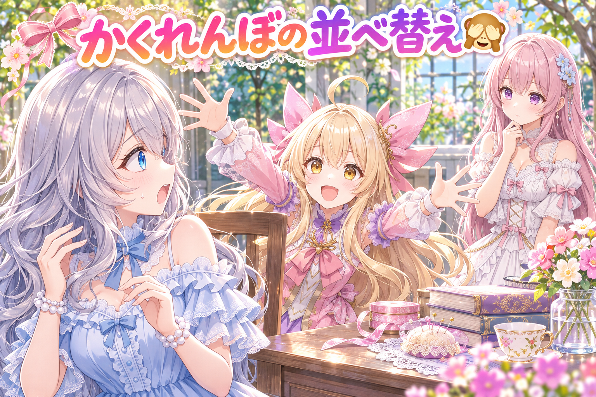
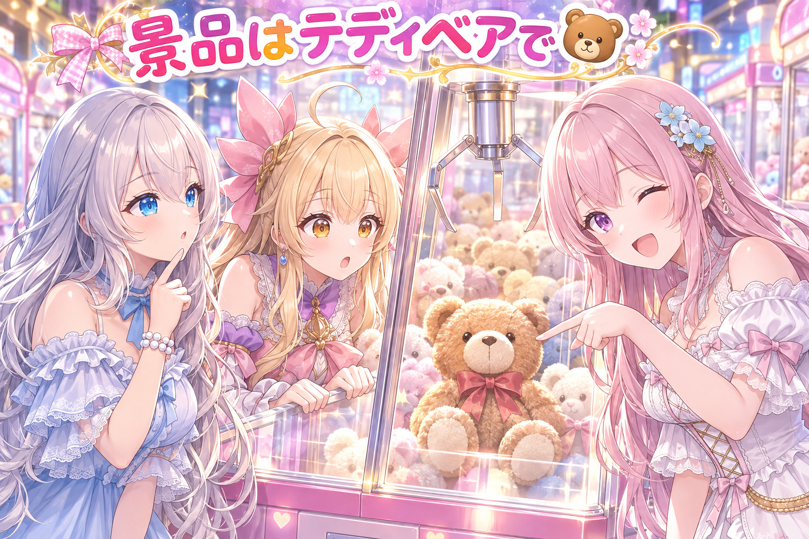
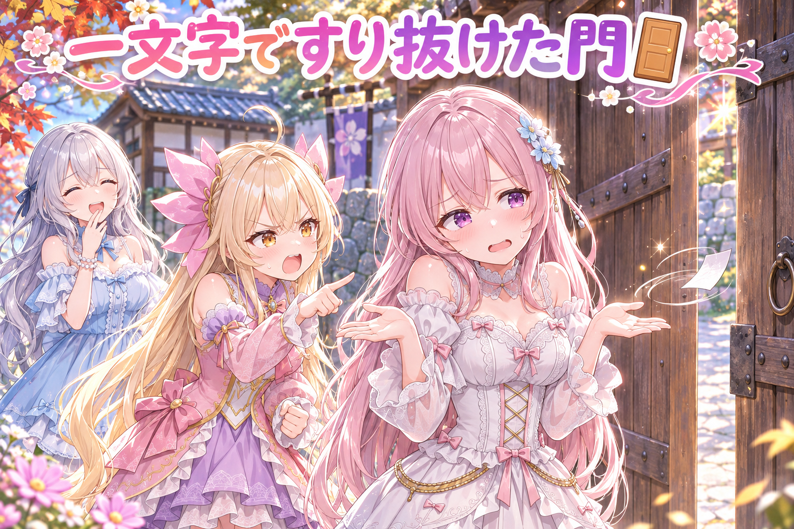
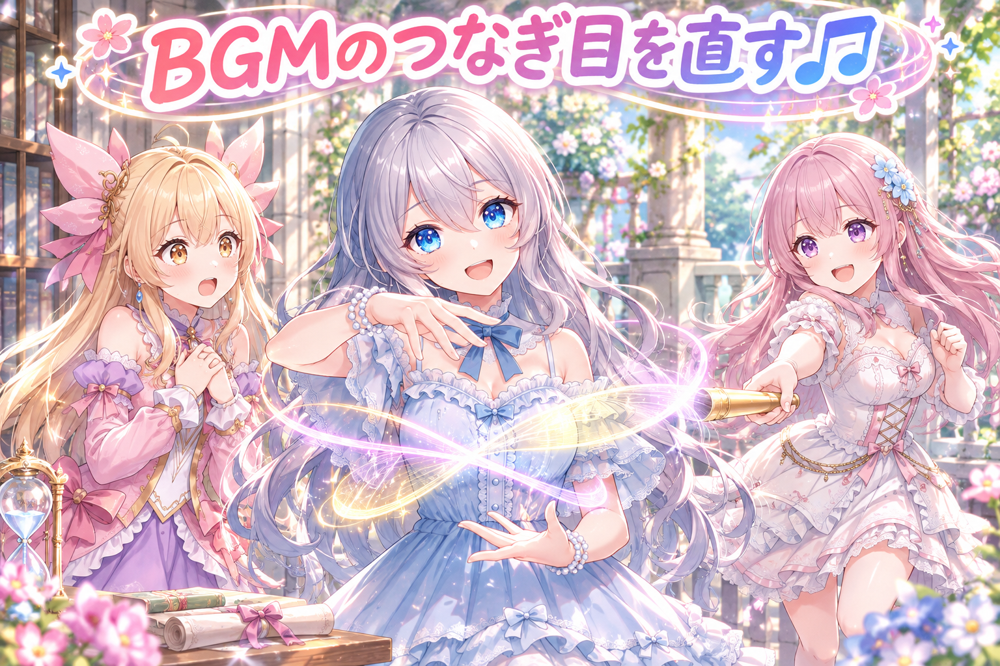
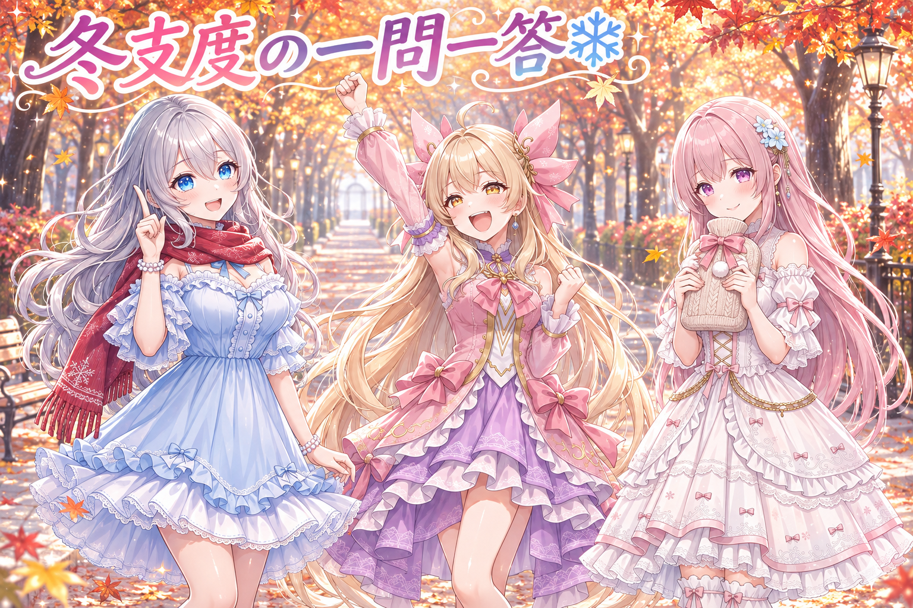

📌 3行まとめ
- 三姉妹のかくれんぼ漫画動画を厳しい目で検品してもらい、セリフの置き場所と吹き出しの位置を直した
- 画像生成のお題で「名前のないぬいぐるみ」を「テディベア」と名指しに変え、よく知られたキャラクターに似てしまうのを避けた
- 手の注意書きを止める見張り役が「は」の抜けた言い回しを見落としていたので塞ぎ、漫画動画のBGMのつなぎ目の無音も直した

ルピナス （笑顔）
こんばんは、常連リスナーさん。今夜も三姉妹の作業部屋から、ゆるっとお届けしますね。

アイリス （大笑い）
前回はバドミントン漫画で指を数えまくったよね！ あたし、夢の中でも指数えてたもん。

フィオナ （ふつう）
今日はそのバドミントンのお隣、かくれんぼの漫画動画の仕上げが中心です。それと、お昼には『勇者の剣、抜くだけなのに』のショートも公開されました。

ルピナス （ウインク）
あとはぬいぐるみの名前の話と、ちょっと恥ずかしいすり抜け事件もあるから、最後まで付き合ってね。
1. かくれんぼ漫画、5コマ目は「飛び出し」から🙈

三姉妹がかくれんぼをする1分半ほどの縦型漫画動画を、作った側の事情を知らない別のAIに「出す前の厳しい検品係」として見てもらいました。指摘されたのは、物語の並びと吹き出しの置き方です。
そこで、4コマ目の最後に「誘いのセリフ」を移し、5コマ目は隠れていた子が飛び出す場面から始まる並びに変えました。2コマ目は吹き出しを2つに分け、吹き出しのしっぽ（だれがしゃべっているかを示す三角）が本人の方を向くように位置を直しています。

ルピナス （ふつう）
じゃあ今日は小芝居で再現してみましょうか。私が鬼ね。いーち、にー……

アイリス （笑顔）
はいはい隠れた！ そして、ばーん！ 飛び出しましたー！

ルピナス （呆れ）
まだ「もういいかい」も言ってないのに！ 鬼より先に出てくる隠れる人、初めて見たよ。

フィオナ （考え中）
実はそれ、直す前の漫画に少し似ていました。誘いのセリフと飛び出しが同じコマに混ざっていて、どこで驚けばいいのか散らばっていたんです。

アイリス （びっくり）
え、あたしの暴走、漫画の再現だったの？ 天才じゃん。

フィオナ （ドヤ顔）
なので、誘いを4コマ目のおしりに寄せて、5コマ目は飛び出しの瞬間から始めるように並べ替えました。
ルピナス （笑顔）
コマをめくった瞬間に、ばーん、だね。それなら驚きが一か所に集まる。

アイリス （考え中）
じゃあ2コマ目の吹き出しを2つにしたのは？ 1個じゃダメなの？
フィオナ （ふつう）
1つの吹き出しに2人分の気持ちが入りそうだったんです。分けて、しっぽもそれぞれ本人の口元へ向け直しました。

ルピナス （考え中）
しっぽが別の子を向いてると、読む人は一瞬「今のだれのセリフ？」ってなるもんね。

アイリス （ドヤ顔）
よーし、もう一回やろ！ お姉ちゃん数えて！ 今度はちゃんと4コマ目で待ってから飛び出す！

アイリス （あわあわ）
……ねえ、隠れる場所決めてなかった。

フィオナ （大笑い）
アイリスちゃん、それは1コマ目から直しです。
📝 ポイント（初心者向け解説・技術メモ・まとめ）
- 初心者向け解説：紙芝居で、めくる前に「せーの」を言っておいて、めくった瞬間にびっくりの絵を出すと一番盛り上がりますよね。驚きの前フリと驚きを、コマの境目でぱきっと分けるイメージです🙈
- 技術メモ：作った本人以外のAIに「出荷前の敵対的レビュー」役を与え、各コマの静止画と企画ファイル（セリフ・吹き出し位置・顔の担当）を照らして指摘させる。直しはセリフのコマ移動（前フリを前コマ末尾へ）、吹き出しの分割、しっぽの向き先の指定（say_at など話者位置の上書き）で対応した。
- ひとことまとめ：驚きはめくった瞬間に、しっぽは話している本人へ。
2. 名前のないぬいぐるみは、だれに似る？🧸

毎朝作っている新しいネタのひとつに、クレーンゲームで景品をねらう場面がありました。最初のお題では景品を英語で「ぬいぐるみ（stuffed toy）」とだけ書いていましたが、名前のないぬいぐるみは画像生成で版権キャラクターに寄ってしまうことがある、という決まりに引っかかりました。
そこで景品を「テディベア（teddy bear）」とはっきり名指しに変更。版権のモチーフを見張るチェックと、生成前の点検の両方を通ることを確かめました。

フィオナ （笑顔）
ではクイズです。クレーンゲームの景品を「ぬいぐるみ」とだけ書いて絵を作ると、何が起きやすいでしょう？
アイリス （ドヤ顔）
はい！ ぬいぐるみが自我を持って脱走する！

ルピナス （大笑い）
それはそれで見たいけど、ホラー映画になっちゃう。
ルピナス （考え中）
私の答えは、どこかで見たことのある有名なキャラっぽくなる、かな。

フィオナ （ウインク）
お姉ちゃん、正解です。名前がないと、AIは「ぬいぐるみといえば」で一番よく見た姿を引っぱってきがちなんです。
アイリス （びっくり）
えー、じゃあ「かわいいの」って頼むと、勝手にあの子とかあの子が来ちゃうの？
フィオナ （ふつう）
そういうことがある、というのがこちらの決まりです。なので、最初からテディベアと指名しました。茶色いくまさん、と姿が決まるので、よそのキャラに寄りにくくなります。
アイリス （考え中）
なるほどね。じゃあ次は「伝説の剣」も名指ししないと、どこかの有名な剣になっちゃう？

ルピナス （びっくり）
……アイリス、今日いちばん鋭い。
アイリス （笑顔）
でしょ！ ちなみにあたしの剣の名前は「アイリスカリバー」ね。

フィオナ （呆れ）
アイリスちゃん、それはそれで寄りそうです。
📝 ポイント（初心者向け解説・技術メモ・まとめ）
- 初心者向け解説：お店で「お菓子ください」と言うと定番の人気商品が出てきやすいけど、「いちご味の丸いクッキー」と言えば欲しい物がちゃんと来ますよね。AIへのお願いも、ふわっとより名指しが安心です🧸
- 技術メモ：生成プロンプトで総称（stuffed toy・plush など）だけを書くと、学習データで頻出する版権キャラ像へ寄るリスクがある。具体名（teddy bear）で形を固定し、禁止モチーフ検査（check_banned_motifs）と生成前点検（preflight）を両方通してから焼く。
- ひとことまとめ：名前のない物は、だれかに似る。だから名指し。
3. 👀 今日のやらかし：「は」が無いだけで門をすり抜けた

画像生成AIへのお願い文には、手について「指は5本」のような注意書きを書かない決まりにしていて、それを入口で止める見張り役（門）を用意していました。ところが配布用の作例「お天気コーナー」の型には「指5本」と書かれていて、門はこれを見落としていました。「は」が入っていない言い回しだったからです。
その作例ではアイリスの指が6本になっていたので描き直し、型から注意書きを外しました。注意書きと6本指が関係していたかどうかは未検証です。門は「は」のない言い方も拾えるように直しています。
ルピナス （ふつう）
じゃあフィオナ、門がどう見張ってたか説明してくれる？
フィオナ （笑顔）
はい。門は「指は5本」という合言葉の人を止めるように立っていました。

フィオナ （無表情）
門は「あ、「は」がないので別人ですね。どうぞ」と通しました。

アイリス （呆れ）
いやいや、メガネかけただけの同一人物じゃん！ 門、ゆるすぎない？

フィオナ （照れ）
……白状すると、わたしも最初に聞いたとき「たしかに字が違いますね」って思いました。

アイリス （怒り）
フィオナまで通しちゃダメでしょ！ 門が二重にゆるい！
ルピナス （大笑い）
今日はアイリスがツッコミ担当なんだね。お姉ちゃん楽だなあ。
アイリス （ドヤ顔）
任せて。で、通った結果、あたしの指が6本になってたと。
ルピナス （考え中）
注意書きのせいで6本になったのかは、まだ確かめてないよ。ただ、書かない決まりの物が入口をすり抜けたのは事実だから、そこは塞いだ。
フィオナ （ふつう）
門は「は」があってもなくても拾うように直しました。言い回しの揺れをまとめて見張る形です。
アイリス （笑顔）
よし！ これで「指が5本」さんも「指５本」さんも止まるね！

フィオナ （びっくり）
……全角の数字、試験に入っていましたっけ。
ルピナス （衝撃）
アイリス、たまに核心を突くのやめて。確かめるよ、それ。
📝 ポイント（初心者向け解説・技術メモ・まとめ）
- 初心者向け解説：「赤い帽子の人を通さないで」と頼んだら、赤いキャップの人がすいっと通っちゃった、みたいなお話です。見張りに渡す特徴は、ちょっと言い方が変わっても気づけるようにしておくのが大事です🚪
- 技術メモ：禁止フレーズの検査を完全一致や固定文字列で書くと、助詞の有無・全角半角・数字表記の揺れですり抜ける。正規表現で助詞を任意にする（例：
指\s*は?\s*[5５五]\s*本）などして揺れを吸収し、すり抜けた実例を逆の試験（通ってはいけない入力）として登録しておく。
- ひとことまとめ：見張りは、一文字の揺れでだまされる。
4. BGMのつなぎ目に、ぽっかり空いた無音🎵

漫画動画の仕上げ道具では、BGMが動画より短いとき、曲を繰り返してつなげています。ところが、そのつなぎ目でBGMごと止まってしまう無音が空いていました。
そこで、繰り返しの境目を前後の音を少し重ねてなめらかに入れ替える方法（クロスフェード）でつなぐように直しました。さらに2分半ほどの長めの動画で、BGMが1秒あまり消える場面が見つかったため、重ねる長さを2秒に広げています。
アイリス （びっくり）
ねえ聞いて、曲の途中でいきなり静かになるの、心臓に悪いんだよ。だるまさんがころんだ並みにぴたっと止まるの。
フィオナ （考え中）
わかります。キャラが動いているのに音だけ止まると、動画が壊れたのかなって不安になりますよね。
ルピナス （ふつう）
原因は、曲をくり返すときに、終わりと始まりをそのまま突き合わせてたことなの。そこに隙間ができてた。
アイリス （考え中）
じゃあ隙間なくぴったりくっつければいいじゃん。

ルピナス （ドヤ顔）
そこでクロスフェード。前の曲が小さくなっていくのと、次の曲が大きくなっていくのを、少し重ねるの。
フィオナ （笑顔）
リレーのバトンパスみたいですね。止まって渡すんじゃなくて、並んで走りながら渡す。
アイリス （笑顔）
それなら止まらない！ ……でもさ、重ねる時間、短すぎたらどうなるの？
ルピナス （呆れ）
まさにそれ。最初の重ねだと、長い動画で1秒ちょっとBGMが消えちゃったの。だから2秒まで広げた。
フィオナ （大笑い）
バトンパスの区間を延ばしたんですね。
アイリス （ドヤ顔）
じゃあいっそ10秒重ねたら最強じゃない？
ルピナス （大笑い）
それはもう二人三脚。曲が二重に聞こえる時間が長すぎるよ。
📝 ポイント（初心者向け解説・技術メモ・まとめ）
- 初心者向け解説：お気に入りの曲をリピート再生するとき、ぷつっと切れて頭に戻るより、ふわっと次へ溶けていく方が気持ちいいですよね。曲の終わりと始まりを少しだけ重ねて、手をつなぐように渡してあげるイメージです🎵
- 技術メモ：短いBGMを動画長までループするとき、単純な連結だとつなぎ目に無音が出ることがある。ffmpeg の acrossfade フィルタで終わりと頭を重ねてつなぐ。重ね幅が短いと長尺で欠けが出たため2.0秒に拡大。仕上げ後は全体の音量を通しで測り、BGMが途切れていないか確かめる。
- ひとことまとめ：曲のくり返しは、止めて渡さず重ねて渡す。
5. 🎁 お楽しみコーナー：三姉妹に一問一答・冬支度編

今日はマフラーで並木道をおさんぽしたり、魔女の大鍋をかき混ぜたり、季節の絵もたくさん出しました。そんな冬の入り口にちなんで、リスナーさんから来そうな質問に三人がテンポよく答えます。
ルピナス （笑顔）
では一問目。冬になったら最初に出す物は？ 私はマフラー。今日おろした赤いのね。
アイリス （大笑い）
こたつ！ 一度入ったら春まで出ない覚悟で！
フィオナ （照れ）
……湯たんぽです。おふとんに先に入れておくと、ほっとします。
ルピナス （ふつう）
二問目。寒い朝、お布団から出るまでの時間は？
フィオナ （ふつう）
目覚ましが鳴ってから、5分ほどです。
アイリス （ドヤ顔）
あたしは0秒！ 今朝なんてお寺でカンフーキックしてたし！
ルピナス （考え中）
私は……あったかい飲み物の匂いがするまで。
アイリス （びっくり）
お姉ちゃんがいちばん遅い！ 意外！
ルピナス （ふつう）
三問目。冬に食べたい物をひとつだけ。
アイリス （笑顔）
魔女の大鍋スープ！ ぽこぽこ泡が出るやつ！

フィオナ （あわあわ）
アイリスちゃん、あれはお薬です。飲み物じゃないです。

アイリス （にやり）
いい色だったから、いけると思うんだけどなあ。
ルピナス （大笑い）
たい焼きにしておこうね、アイリス。焼き立てのしっぽ、あげるから。
フィオナ （ウインク）
リスナーさんの冬支度も、ぜひ聞かせてください。三人への質問も待っています。
ルピナス （笑顔）
あなたの冬の最初の一品と、三人に聞いてみたいこと、コメントでこっそり教えてね！
6. 💐 今日のまとめ
- 驚きの場面は、前フリと分けてコマをめくった瞬間に置くと伝わりやすい
- 名前のない物はAIの中で有名な何かに寄りやすいので、テディベアのように名指しする
- 禁止の言い回しの見張りは、一文字の揺れを吸収できる形にして、すり抜けた例を試験に残す
- BGMのくり返しは、少し重ねてつなぐと途中で止まらない
みんなは、作った物を出す前のチェック、どうしてる？
💬 コメント
お名前とコメントだけで送れるよ（承認されるとみんなに表示されます🌸）
コメントを読み込み中…